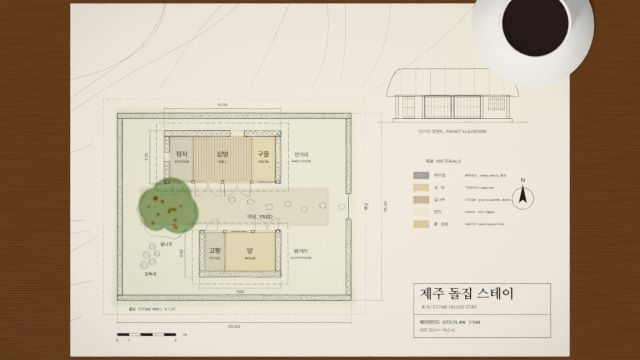
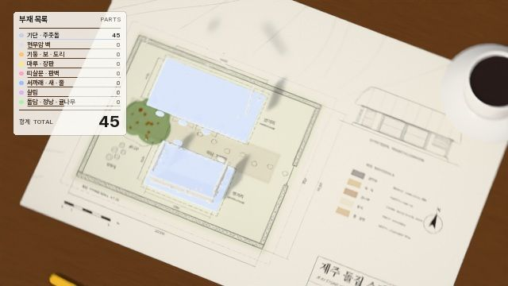
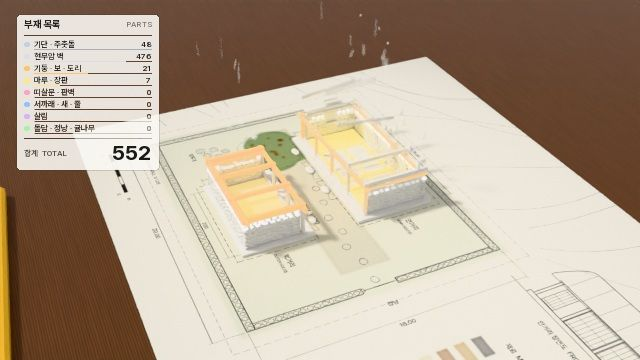
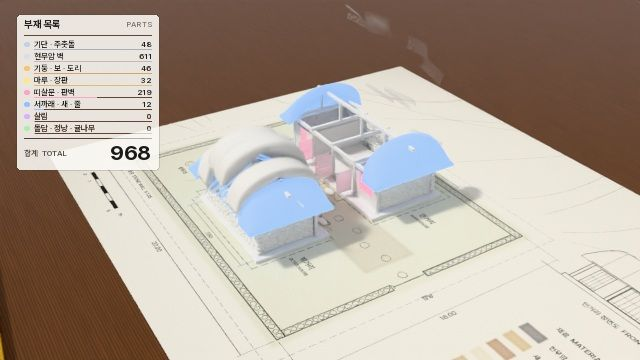
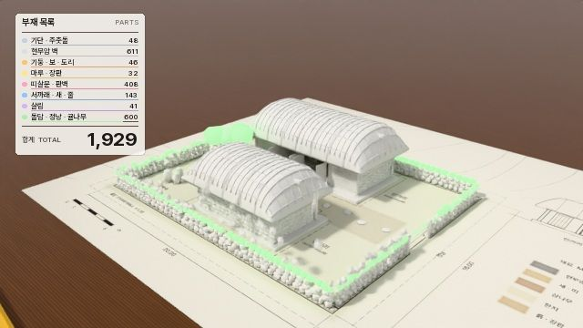
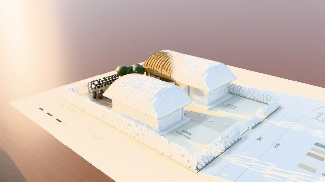
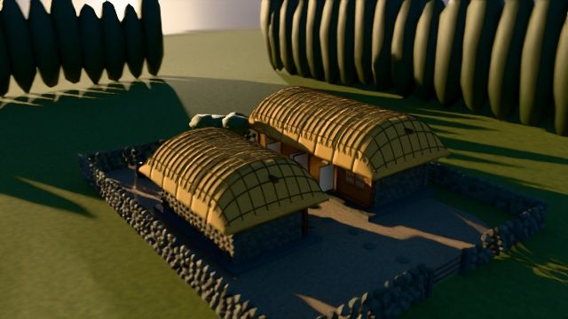
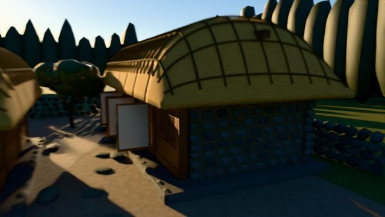
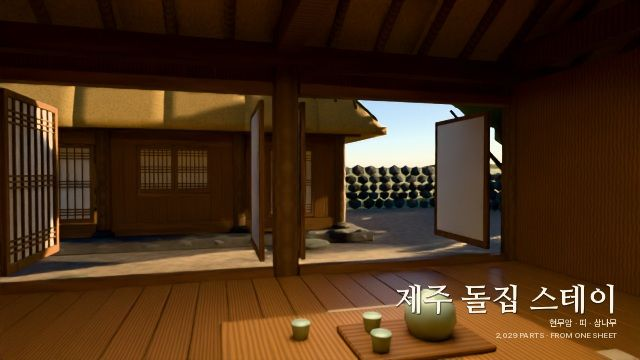

작업 흐름
- 입력
- 주제(건물 종류 · 장소 · 시각) 또는 스케치 · 평면도 · 분양 도면 사진
- 숫자와 도면
- 대지 · 칸 · 벽 두께 · 처마 · 용마루 · 개구부 · 가구를 미터로 적은 plan.json, 수채 번짐과 등고선이 있는 도면(sheet.png) 또는 두 점으로 맞춘 사용자의 도면
- 짓기
- 단계(기초 · 벽 · 골조 · 바닥 · 문 · 지붕 · 살림 · 마당)마다 따로인 부재로 짓는 build.py, 떠 있는 부재 · 받침보다 먼저 내려앉는 부재 0개
- 영상
- 200 mm로 내려다본 도면 → 나선 하강 → 박자 격자에 내려앉는 점토 부재와 카운터 → 초점에서 퍼지는 물결 → 문으로 들어가 돌아보기 → 제목
- 출력
- final.mp4(합성 사운드 · -14 LUFS · -1 dBTP), timeline.json, 검사 숫자(check.json), 접촉 시트
python3 plan-build-film/scripts/new-project.py my-house --title "숲속 다실"
python3 plan-build-film/scripts/draw-sheet.py my-house
blender -b --factory-startup -P plan-build-film/kit/film.py -- --project my-house --plan
blender -b --factory-startup -P plan-build-film/kit/film.py -- --project my-house --res 1280x720
python3 plan-build-film/scripts/score.py pbf-out/my-house
python3 plan-build-film/scripts/hud.py pbf-out/my-house
python3 plan-build-film/scripts/check.py pbf-out/my-house요구 사항: Blender 4.2 이상(5.2.5에서 확인, CPU · GPU), Python 3(numpy · Pillow), ffmpeg. 단계별 순서는 SKILL.md에 있습니다.
샘플
예제 「제주 돌집 스테이」의 장면과, 짓는 동안 대 본 스틸과 도면, 새 주제로 시작한 뼈대입니다. 카드를 누르면 그 순간에서 멈춘 라이브 데모가 열립니다.
「제주 돌집 스테이」 22.9초 · 88 BPM · 부재 2,029개
안거리 · 밖거리 두 채, 현무암 벽을 한 덩이씩, 띠살문을 살 하나씩, 초가를 다발과 줄로 짓고, 귤나무에서 물결이 퍼집니다.

도면 · 0초첫 장면은 도면200 mm로 내려다본 배치평면도 · 정면도 · 재료 범례 · 커피잔

기단 · 1.9초나선 하강과 기단렌즈가 짧아지며 원근이 열리고 기단이 아래에서 올라옴

벽 · 골조 · 5.6초돌 한 덩이씩, 박자에아래 줄부터 · 16분음표 격자에 내려앉음 · 카운터

문 · 지붕 · 8.4초띠살문은 살 하나씩문짝마다 18개 · 서까래 · 초가 다발

마당 · 12.8초돌담 · 정낭 · 귤나무돌담 돌 수백 개 · 물결 직전의 정적

물결 · 14.6초점토가 재료로마디의 첫 박에 · 종이는 땅으로 · 작업실은 하늘로

살아난 땅 · 16.4초늦은 오후의 돌집Khronos PBR Neutral · 귤밭 · 방풍림이 물결 따라 자람

들어가기 · 18.4초정낭 위로, 마당으로밖거리를 비켜 내려앉음 · 디딤돌을 따라 상방의 열린 문으로

상방 · 22.6초돌아서서 밖을 봄찻상 · 다기 · 열린 띠살문 · 제목
스틸 · 도면 영상 전에 확인하는 것
도면을 숫자로 그리고, 샷마다 스틸을 대 보며 다른 점을 고친 결과입니다.
새 주제 뼈대 new-project.py
「숲속 다실」로 시작한 프로젝트가 그대로 도는 모습입니다. 브리프를 채운 뒤 build.py를 부재 단위로 바꿉니다.
실제 작품
이 레포에서 원본 게시물을 보고 만든 예제와, 스킬을 만든 출처입니다.
「제주 돌집 스테이」22.9초 · 안거리 · 밖거리 · 현무암 · 초가 · 부재 2,029개 · 프레임 시퀀스 페이지plan-build-film/examples/jeju-stone-house
출처 · 虎小象의 X 게시물산마루 카페 「松间咖啡」 24.6초 · 부재 2,829개 · 构件清单 카운터 · 92.5 BPM · -14 LUFSx.com/hx831126/status/2125460963541577784
출처 · Nyxera0x의 글How I Turn Any Sketch Into a 3D House You Can Walk Through · 세 채의 집과 모든 프롬프트x.com/Nyxera0x/status/2125210356238762233
원본 레포 · Nyxera0x/blueprint스케치 · 평면도 · 레퍼런스에서 집을 짓는 Claude Code 스킬 (MIT)github.com/Nyxera0x/blueprint
링크
- SKILL.md 워크플로
- 폴더 kit · scripts · references · examples
- README.md 빠른 시작
- references/BRIEF.md 브리프 틀 · 스틸 검토 기준
- references/READING.md 입력을 숫자로 읽기
- references/BUILD.md 목수처럼 짓기 · 키트 API
- references/FILM.md film.json · 박자 · 물결 · 카메라
- references/SOUND.md 소리 · 작곡 · 라우드니스
- references/LESSONS.md 겪은 문제와 해결
- references/SOURCE.md 원본 게시물 · 글 · 레포에서 가져온 것과 안 가져온 것